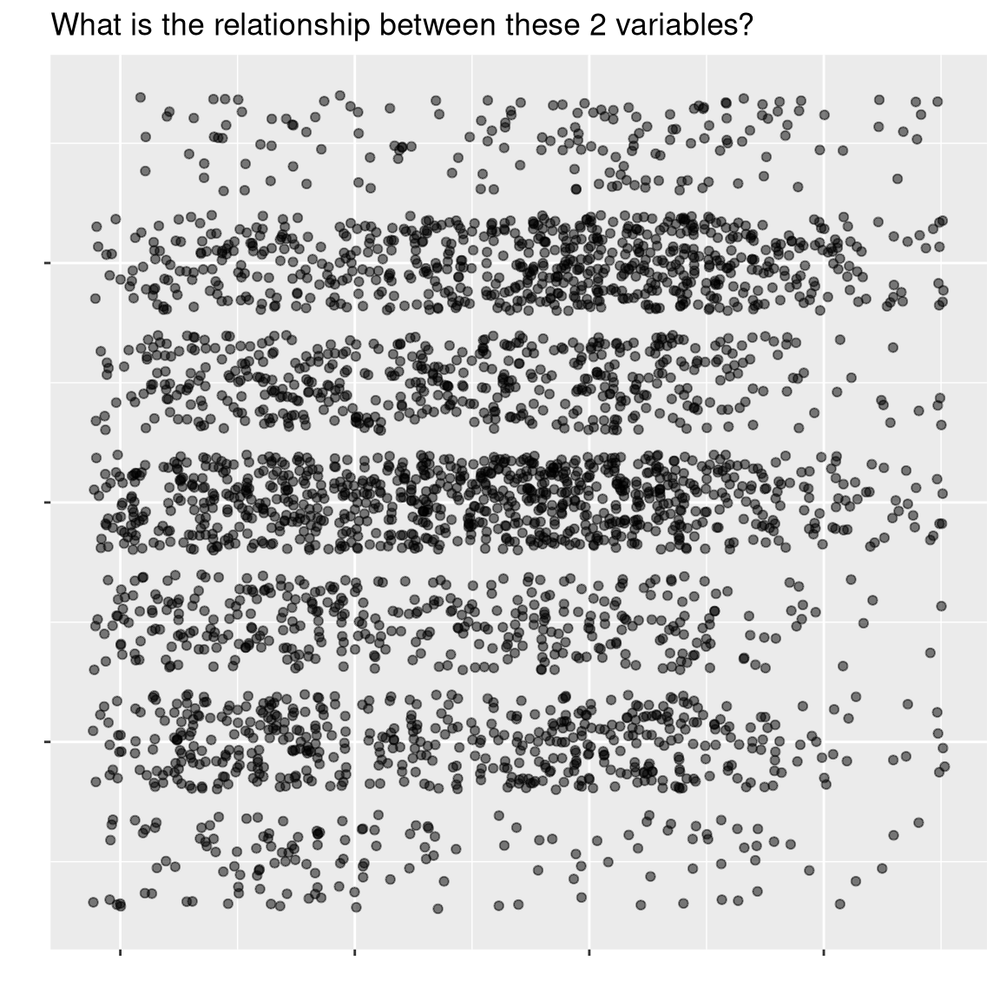
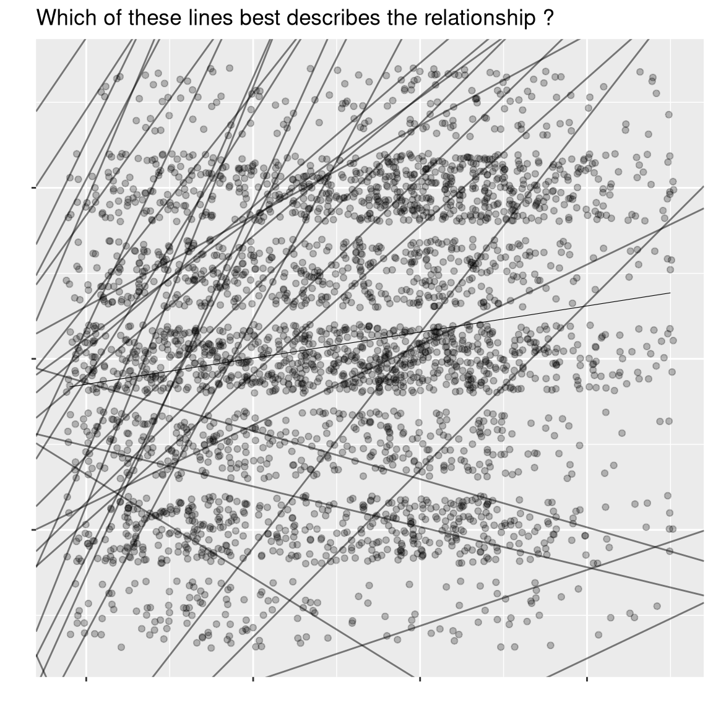
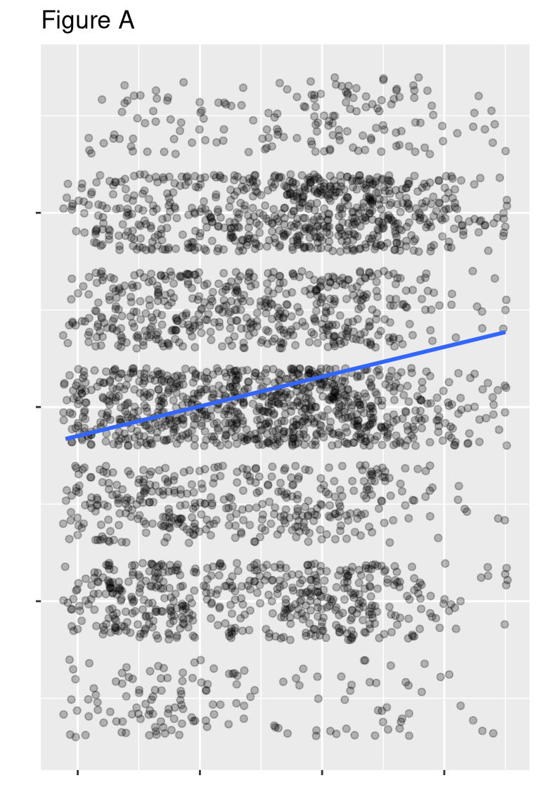
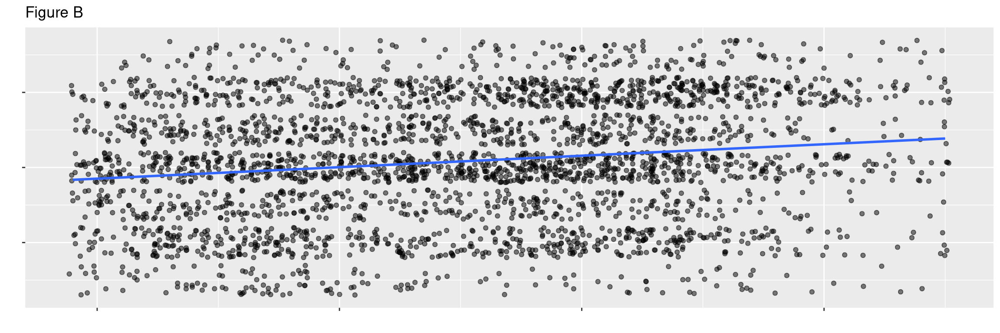
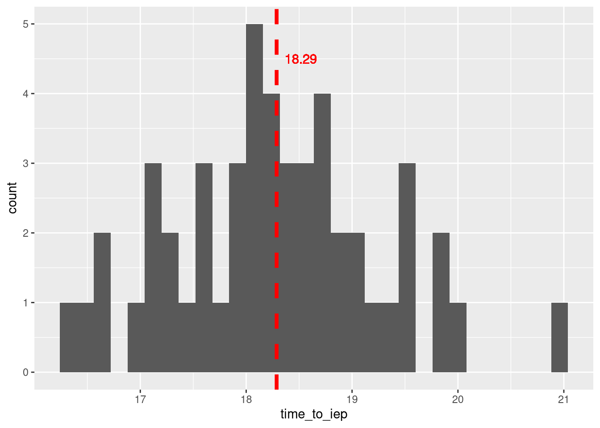

Session 6: Data Modeling (1/2)
Learning Objectives:
- Identify and quantify variable relationships
- Interpret results from simple linear models
- Make predictions using simple linear models
Resources
Functions
cor(): correlation functionlm(): linear model function
Readings
Practice
Data Modeling

We have started to use data to answer questions using descriptive statistics such as mean(). We have also learned how to use visualizations to identify variable relationships and trends using ggplot(). People often says that image is worth a 1000 words, Images are a great tool to convey a message however, our perceptions can be biased (Lewandowsky and Spence 1989). Let’s see.
Perception Bias
# Load library
library(tidyverse)
# Import and load the data
data_url <- "https://github.com/mickaeltemporao/CMT4A-CMSS-TEMPLATE/raw/main/data/ts_2016.rds"
raw_data <- readRDS(url(data_url,"rb"))
# Prepare data
temporary_data <- raw_data %>%
select(
V161267, # age
V161126, # ideology
) %>%
rename(
"age" = "V161267",
"ideology" = "V161126",
) %>%
filter(
between(ideology, 1, 7),
age >= 18,
)Relationship between variables can be complex to see


Strong relationship?


Is the relationship observed due to random chance?
To avoid such biases we need to quantify the strength of relationships using approved standards and be confident about the claims we make. Linear models such the linear regression will help us achieve these goals!
What is a model?
# Load library
library(tidyverse)
# Saving the data
my_data <- data.frame(
time_to_iep=c(16.93, 19.49, 18.21, 19.09, 17.67, 18.48, 16.37, 17.57, 19.18, 18.74, 17.15, 17.76, 17.2, 19.78, 18.34, 17.93, 18.09, 17.14, 19.41, 17.99, 16.54, 18.42, 16.65, 19.83, 18.32, 18.13, 16.72, 18.05, 18.5, 19.45, 17.22, 17.32, 19.48, 18.93, 18.69, 18.78, 18.58, 18.8, 18.28, 20.06, 18.12, 18.64, 18.16, 17.44, 18.96, 17.55, 19.09, 17.95, 21.01, 18.19)
)
# Visualize
ggplot(my_data, aes(x=time_to_iep)) +
geom_histogram() +
geom_vline(aes(xintercept=mean(time_to_iep)), size=1.5, color="red", linetype=2) +
geom_text(aes(x=mean(time_to_iep), y=4.5, label=round(mean(time_to_iep), 2)), color="red", hjust=-0.25)
Hack Time!
- If you’re interested in how the dataset used in this session was generated –> click here <–
# Session 6: Data Modeling --------------------------------------------------
# Load library
library(tidyverse)
# Import and load data
data_url <- "https://github.com/mickaeltemporao/CMT4A-CMSS-TEMPLATE/raw/main/data/clean_2016.rds"
tb <- readRDS(url(data_url,"rb"))
# Always look at the data first!
head(tb)
# Last time we ended by checking the relationship between ideology and age
ggplot(tb, aes(y=ideology, x=age)) +
geom_jitter() +
theme_light()
# Let's add the line of best fit
ggplot(tb, aes(y=ideology, x=age)) +
geom_jitter() +
geom_smooth(method="lm") +
theme_light()
# Was the relationship positive or negative? TIP: use cor()
tb %>% select(ideology, age) %>% ...
# What is the size of the effect ?
# TIP: we need to use lm()
# ---------------------- How does lm() work? ------------------------
# lm(formula, data)
# formula : y ~ x
# y : the dependent variable or what you are trying to explain
# x : the independent variable(s) or what you believe explains y
# data : the dataset in the form of a data.frame
# -------------------------------------------------------------------
# In the next line we fit a model of ideology as a function of age
lm(ideology ~ age, data = tb)
# Is there an effect of party identification on ideology
lm(ideology ~ party_id, data = tb)
# Is there and effect of education on ideology?
lm(ideology ~ education, data = tb)
# Is there an effect about gender on ideology?
lm(ideology ~ gender, data = tb)
# Which model is right?
# All models are wrong but some are useful (Box, 1976)
# Are those effects due to chance or can we be confident about them?
# Let's make a more exhaustive model and check!
lm(ideology ~ age + party_id + education + gender, data = tb)
# This is getting a bit more difficult to understand... bear with me!
# R's fantastic summary (not summarise) function is here to help us.
# Let's save this model
my_model <- lm(ideology ~ age + party_id + education + gender, data = tb)
# We can use R's great summary() function to get a model summary!
summary(my_model)Requirements
- Complete Challenge 4: The Analyst
References
Lewandowsky, Stephan, and Ian Spence. 1989. “The Perception of Statistical Graphs.” Sociological Methods & Research 18 (2-3): 200–242.
Copyright © Mickael Temporão, 2020, GNU Affero General Public License v3.0.